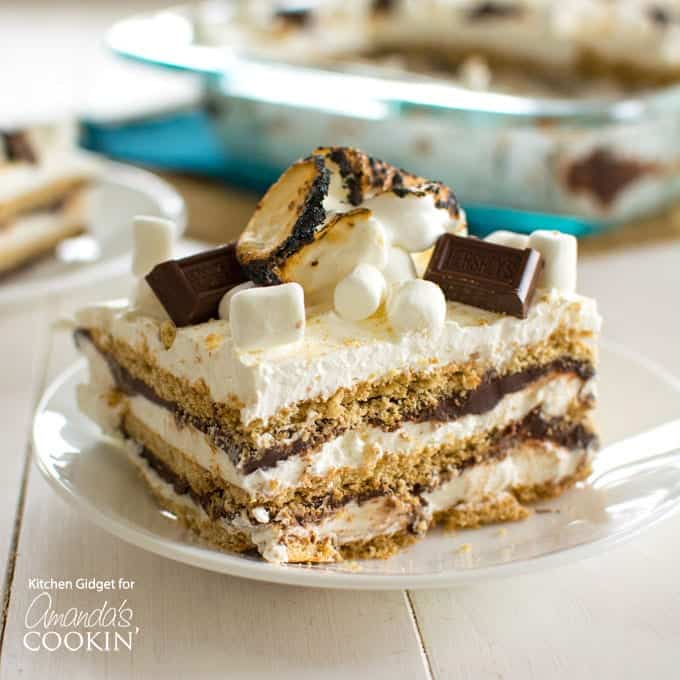

S'mores Icebox Dessert

Description:
This S'mores Icebox Dessert features layers or grham crackers, marshmallow whipped cream, and chocolate ganache. Yum!
Ingredients:
- 2 1/2 cups chocolate chips
- 2 cups heavy cream
- 16 oz whipped topping thawed
- 7 oz marshmallow fluff
- 14.4 ounces graham crackers 1 box: 3 sleeves
- 2 cups mini marshmallows
- 14.4 ounces graham crackers 1 box: 3 sleeves
- Extra marshmallows, graham crackers and chocolate chunks, for garnish
Directions for Cake:
- In a large bowl, combine the whipped topping, marshmallow fluff and marshmallows.
- Spread a thin layer on the bottom of a 13x9 pan. This is just to anchor the cracker layer.
- Top with a layer of graham crackers. Fill in any gaps with crackers cut to size.
- Top with 1/3 of the marshmallow mixture and spread in an even layer.
- Next, add half the chocolate ganache.
- Repeat layer of graham crackers, 1/3 marshmallow mixture and remaining ganache.
- Top with final layer of graham crackers and final 1/3 of marshmallow mixture.
- Cover and refrigerate for at least 4 hours or overnight.
- Garnish with graham cracker crumbs, chocolate chunks and marshmallows, if desired.
Directions for Ganache:
- Place the chocolate chips in a bowl.
- In a small saucepan warm the heavy cream until it comes to a simmer.
- Pour the cream over the chocolate and let sit for a few minutes, then stir until melted and smooth.
- Place in refrigerator while preparing remaining ingredients.